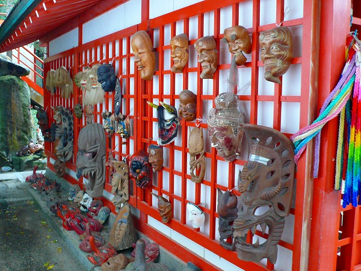

淡嶋神社/和歌山県和歌山市
和歌山の加太、海水浴と釣りしか取り柄がなさそうな平凡な港町に珍寺マニアを引き付けてやまない、すんばらしい神社がある。
其の名は淡嶋神社。ずばり雛祭り発祥の地である。ではその縁起話から。
この神社もとは対岸の友ヶ島にあったものを仁徳天皇が現在の加太に移したもので、祭神が少彦名命と神功皇后の男女一対の神像であったところから雛人形が生まれ、現在に至ってるそうな。
で、現在の淡嶋神社だが、婦人病平癒祈願をやって
いて女性の下着をビニール袋にいれて奉納してあったりしてブルセラショップかここは、ってな部分もあるのだが、やっぱりメインは人形供養。
奉納された人形が境内に溢れかえっている。その数は尋常なものではない。
神社の回廊部分や社務所の前は雛人形でびっしり覆われているのだ。
結構なシロモノでしかも年期モノである。じい〜っと見てると無数の人形と目が合う。
引き込まれそうでコワイ。まんま寺山修二ワールド。
しかし本殿の左側に目をやると一転してヘンテコな世界に突入する。
雛人形以外の人形が安置されているエリアがひろがる。
まずはビッシリと並ぶ動物の剥製が。鹿や狸は勿論のこと、ワニなんてもう丸太状態で積まれている。
本殿の脇には十二支もの。

順番にズラリと十二支の陶器が並んでいる。
その他木彫りの象さんやアイヌのニポポ、勿論招き猫、七福神、陶器の狸、博多人形類も充実。
中にはアフリカのマコンデやバリの仮面などといったモノまで天狗の面と一緒に並んでました。

とにかく考え付く限りの和モノ人形が並んでいる。しかも異常なほどにきっちりとジャンル分けされている。
ついでにキッチリ大きさ順に並んでいる。
もう、その執念たるや人形や下着を持ってきた女性達の思いなどを遥かに凌駕しているかのようだ。
そう考えると、びっしり並んだ雛人形よりも異常なまでに整然と並んだ人形の方が印象的でもありコワかったりする。
珍寺大道場 HOME